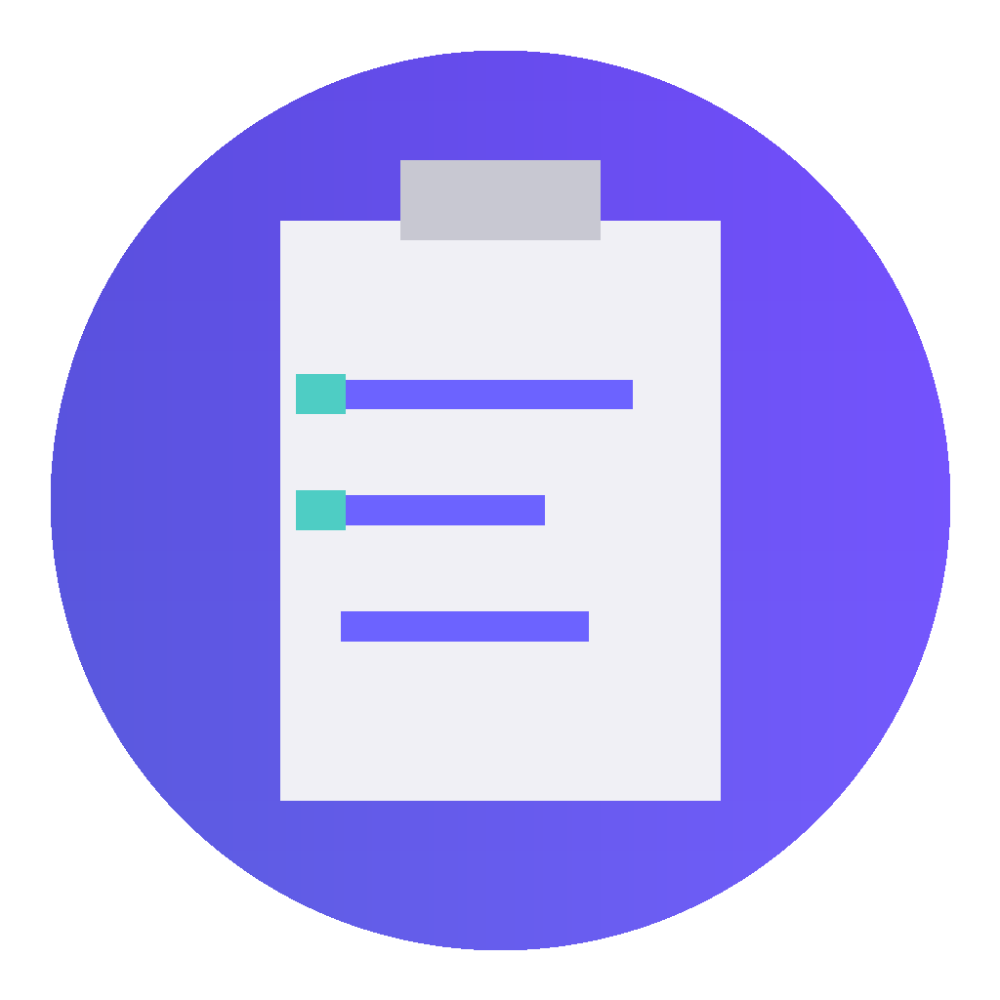

Task Manager
Conectando sesión...
⚠️
Sesión no válida
Pedí al desktop que genere un QR nuevo.
⋮⋮
🔄
A−
A+
📝
⚡
⏸ 0.0
Velocidad
00:00
✕
↶
0 clips
👁
✓
▶
Mis clips
✕
▶ Ver todo seguido
🔄 Repetir
💾 Guardar
📤 Enviar al desktop
Subiendo video...
0%
No cierres esta pantalla hasta que termine.
✓
¡Video enviado!
Ya aparece en el desktop, listo para asignar al editor.
💾 Guardar también en el celular
Grabar otro